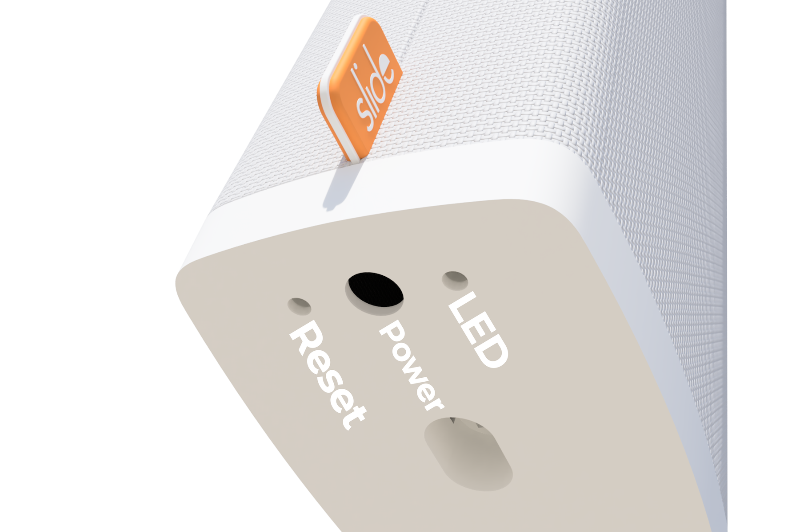

By default, your Slide is configured to connect to the cloud API. It is possible to set it to allow to connect locally, but the Slide will no longer connect to the cloud API. The official Slide app for your smartphone will not work if your Slide is in local mode.
On the bottom of your Slide, there is are two holes. One of them is the reset button.

Briefly press the reset button twice, with about 0.5 second between the two presses.
If you see the LED (the other hole) rapidly flash five times, you have disabled the Cloud API and enabled the Local API.
(If you see the LED slowly flash two times, you have enabled the Cloud API and disabled the Local API)